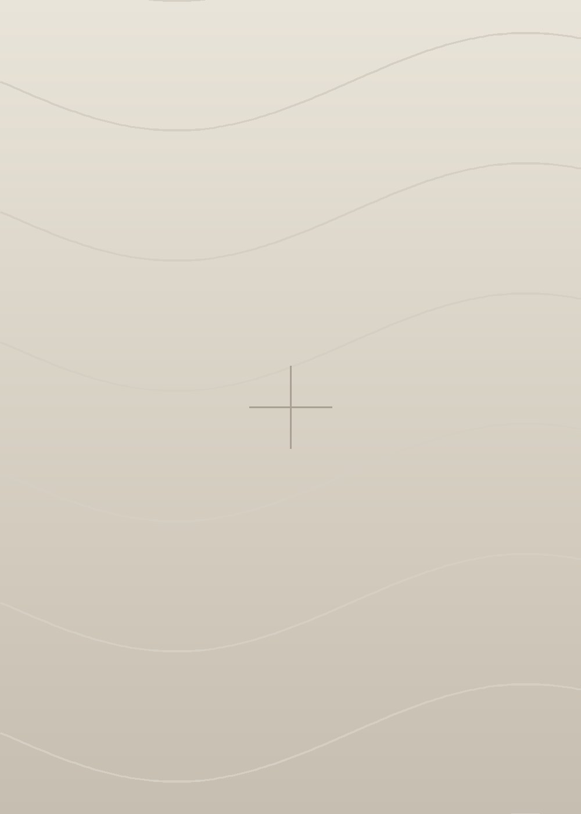

Nome do Cliente | Subtitulo da entrega
Metodo Marca
com Essencia©
MES/ANO
Primeira secao
Uma linha que diz o que esta secao entrega.
Segunda secao
Uma linha que diz o que esta secao entrega.
Terceira secao
Uma linha que diz o que esta secao entrega.
Quarta secao
Uma linha que diz o que esta secao entrega.
Quinta secao
Uma linha que diz o que esta secao entrega.
Nome da Entrega|Nome do Cliente

Nome da Entrega|Nome do Cliente
Paragrafo de abertura que situa o leitor no que esta sendo apresentado, em duas ou tres linhas.
Paragrafo de apoio com o detalhamento. Em cinza medio, para que a leitura longa nao dispute com o paragrafo de abertura acima.
O que nao e
Delimitacao do que esta
fora do escopo.
O que e
Definicao do que a entrega
efetivamente investiga.
Nome da Entrega|Nome do Cliente
A pergunta que conduz esta etapa
Nome da Entrega|Nome do Cliente
Metodo
Uma linha explicando por que o metodo tem etapas e o que a soma delas produz.
Etapa um
O que esta etapa observa e por que ela vem primeiro.
Etapa dois
O que esta etapa observa e por que ela vem primeiro.
Etapa tres
O que esta etapa observa e por que ela vem primeiro.
Etapa quatro
O que esta etapa observa e por que ela vem primeiro.
Etapa um+etapa dois+etapa tres+etapa quatro=sintese
Uma frase curta explicando o que a sintese significa na pratica.
Nome da Entrega|Nome do Cliente
01
Nome da Entrega|Nome do Cliente
Nome da Secao
Paragrafo de abertura do bloco narrativo, em duas ou tres linhas.
Paragrafo de desenvolvimento, em cinza medio. Aqui entra o detalhe, o contexto, o que sustenta a afirmacao feita acima.
Uma frase de fechamento que condensa o bloco.
ValorValorValorValor
Nome da Entrega|Nome do Cliente
Nome da Secao
01
Titulo do item
Descricao do item, com o relato que sustenta a leitura.
O que isso revela
A leitura estrategica extraida do relato acima.
02
Titulo do item
Descricao do item, com o relato que sustenta a leitura.
O que isso revela
A leitura estrategica extraida do relato acima.
Nome da Entrega|Nome do Cliente
Nome da Secao
Uma linha que nomeia a logica recorrente.
| A realidade dizia | “A condicao dada.” | A resposta que foi dada a ela. | |
| O contexto dizia | “O limite imposto.” | A resposta que foi dada a ele. | |
| O mercado dizia | “A regra estabelecida.” | A resposta que foi dada a ela. |
Nome da Entrega|Nome do Cliente
Nome da Secao
Uma linha que introduz a sequencia.
Uma frase textual do cliente que comprova o padrao.
Nome da Entrega|Nome do Cliente
Nome da Secao
Primeiro passo do percurso
Segundo passo do percurso
Terceiro passo do percurso
Quarto passo do percurso
Quinto passo do percurso
O ponto de chegada
Verbo um→verbo dois→verbo tres
Nome da Entrega|Nome do Cliente
Nome da Secao
Primeira dimensao
O conteudo da dimensao, em frases curtas. Uma ideia por frase.
Segunda dimensao
O conteudo da dimensao, em frases curtas. Uma ideia por frase.
Terceira dimensao
O conteudo da dimensao, em frases curtas. Uma ideia por frase.
Quarta dimensao
O conteudo da dimensao, em frases curtas. Uma ideia por frase.
Nome da Entrega|Nome do Cliente
Nome da Secao
Razao de ser
A frase que sintetiza a entrega e sustenta tudo o que veio antes.
Uma linha de desdobramento, explicando o que a frase implica.
Nome da Entrega|Nome do Cliente